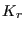
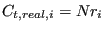
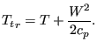

A gate valve (Figure 120) is characterized by head losses  of the form:
|  | (134) |
where  is a head loss coefficient depending on the ratio
,
is a head loss coefficient depending on the ratio
,
 is the mass flow, g is the gravity acceleration and
is the mass flow, g is the gravity acceleration and  is the
liquid density.
is the
liquid density.  is the cross section of the pipe,
is the cross section of the pipe,  is a size for the
remaining opening (Figure 120) and
is a size for the
remaining opening (Figure 120) and  is the diameter of the pipe.
Values for
is the diameter of the pipe.
Values for  can be found in file ``liquidpipe.f''.
can be found in file ``liquidpipe.f''.
The following constants have to be specified on the line beneath the *FLUID SECTION, TYPE=PIPE GATE VALVE card:
The gravity acceleration must be specified by a gravity type
*DLOAD card defined for the elements at stake. The material
characteristic  can be defined by a
*DENSITY
card.
can be defined by a
*DENSITY
card.
For the gate valve the inverse problem can be solved too. If the user defines
a value for
,  is being solved for. In that case the
mass flow must be defined as boundary condition. Thus, the user can calculate
the extent to which the valve must be closed to obtain a predefined mass
flow. Test example pipe2.inp illustrates this feature.
is being solved for. In that case the
mass flow must be defined as boundary condition. Thus, the user can calculate
the extent to which the valve must be closed to obtain a predefined mass
flow. Test example pipe2.inp illustrates this feature.
Example files: pipe2, pipe, piperestrictor.